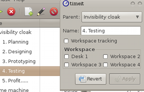
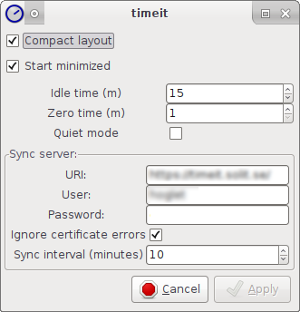
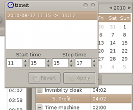

TimeIT is a tool intended to help you to keep track on how much time you
spend on tasks.
TimeIT is a tool intended to help you to keep track on how much time you
spend on tasks.
TimeIT is a tool intended to help you to keep track on how much time you
spend on tasks.
It is intended to be discreet and unobtrusive. It is using workspace-tracking and idle detection to minimize the interaction needed, in the intended use case you are not even interacting at all with the program
Set parentAssign workspace for desktop trackingEnable workspace tracking |
 Edit task |
|
Here you can set how TimeIt behaves.
|
 |
|  |